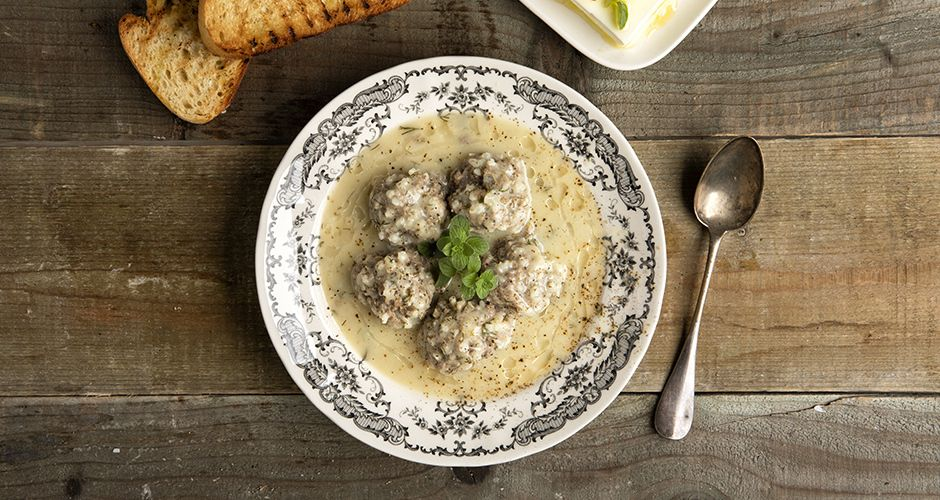

Youvarlakia (Greet meetball soup)

Description
A delicious warm soup, with meat-and-rice balls swimming in an egg-lemon sauce. Great for dinner on a cold winter evening.
Ingredients
For the meatballs
- 1 red onion
- 1 clove of garlic
- 500g of minced beef
- 150g round grain rice
- 1/4 bunch dill, finely chopped
- 1 Tbsp mint, finely chopped
- 15g salt
- pepper
- 2-3 Tbsp olive oil
- 1 1/2 litres of water
- Lemon peel (from 1 lemon)
- 2 bay leaves
- Tbsp of vegetable stock pot
For the egg-lemon sauce
- 2 medium egg yolks
- 1 tsp corn starch
- kemon juice (from 2 lemons)
- 1 Tbsp dill
Method
For the meatball soup
- Add the onion, garlic and 2 Tbsp of water to a blender, and blend very well.
- Put the mixture in a tea towel, and squeeze well to remove all the excess liquid.
- Transfer to a bowl and add the minced beef, the rice, the dill, the mint, salt pepper, olive oil and mix well.
- Shape 18-20 meatballs and place them in a pot.
- Add the water, lemon peels, bay leaves, vegetable stock. Cover with the lid, bring to a boil then simmer over low heat for 30-40 minutes
For the egg-lemon sauce
- Add the egg yolds, corn starch, lemon juice and the dill to a bowl and mix well.
- Add very slowly 2-3 ladlefuls of the meatball stock, while whisking constantly. This needs to be slow so that the temperature of the sauce rises gradually, otherwise the egg will get cooked and the sauce will end up with bits in it, instead of the target silky texture.
- Pour the sauce back into the pot with the meatball soup, and stir lightly for ~30 seconds.
- Serve with feta cheese, sourdough bread, olive oil, oregano and pepper.